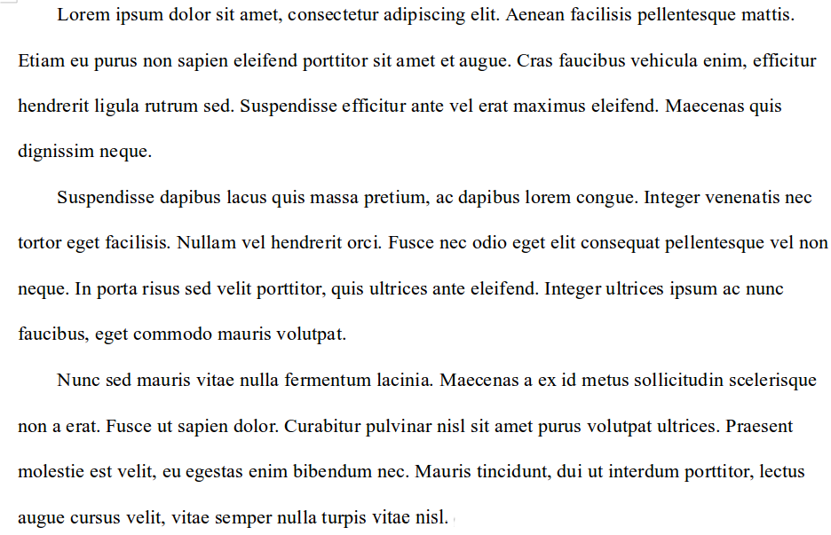
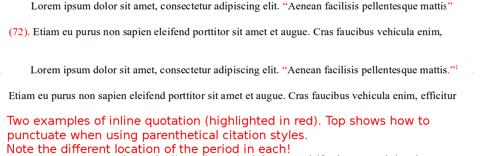
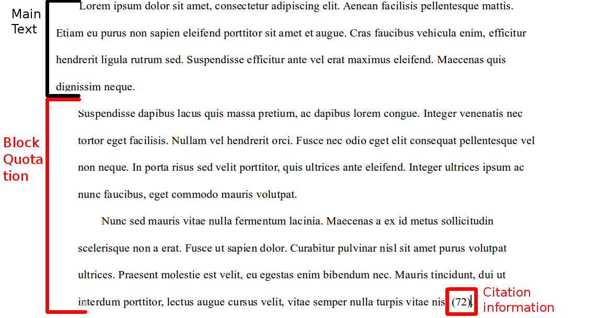

Essay style: Some basics
Posted: Jan 03, 2015 17:01;
Last Modified: Jan 03, 2015 17:01
Keywords:
The following are some core standards for formatting University-level essays and similar types of work in my classes. Not all apply to all types of work (for example, blogs, unessays, or in-class writing assignments). Feel free to ask if you think your work requires something different.
Most of these requirements will be shared by other instructors, especially in English; if you are not told otherwise by an instructor, you probably won’t get in trouble following these guidelines. Whenever I am aware that there are differences of opinion among instructors (or that different types of assignments might require very different formatting, I have indicated this).
Contents
Page format.
Your essay should be American Letter (8.5” x 11”) format, printed “portrait” orientation (i.e. the normal way of printing paper so that the page is longer than it is wide).
Staple your pages together in the top left corner using a single staple. _Do not use a binder, “duo tang,” or any other kind of cover.
Letter-Sized paper is a North American standard. If you are required to submit your work on paper, you may find that your instructor wants you to print double-sided in order to save paper—though most will still require single-sided printing as this is much easier to grade. A few instructors may ask you to join your pages together with a staple: but staples are far more normal.
Margins
Set your margins (all sides) to 5 cm (2”).
Most instructors will probably specify 3cm or 1.5”. I prefer a wider margin as it gives me more space for comments.
Font
Use a 12 point serif-style (i.e. Roman-style) font: examples include, Times, Roman, Times New Roman, Garamond, Bitstream Charter. Don’t use a sans-serif-style font (e.g. Arial).
This is standard for most instructors. If your instructor specified something else, however, make sure you do what they ask: they may require a different type-face or font size due to difficulties with their eyesight. Never use a font smaller or larger than 12pt unless you are told to.
Line spacing
Double-space all text including quotations and bibliography.
This is standard for most instructors.
Name
Unless I tell you otherwise, do not put your name anywhere on the body of your essay. If you are submitting your essay electronically, your name is automatically recorded with the submission so you do not need to record it anywhere in your paper. If I ask you to hand in your paper in hard copy, you should put your name on a separate title page.
I ask for this because I like to mark essays “blind” (i.e. without knowing the author’s name until I am finished).
Instructors differ greatly on what they prefer in this area. Some prefer last name on every page; some prefer your name name, class, date, etc. at the top of the first page of your main body. You should ask your instructor what they prefer if you are in doubt.
Paragraph style.
Essays should use indented paragraph style:

In this style, the first line of each new paragraph is indented about 5 spaces or one tab from the left hand margin. Not that paragraphs are not separated by a blank line (blank lines should be used only in longer essays to separate longer sections).
Most instructors will want you to use indented style. The most common mistake students make with this style is putting blank lines between paragraphs. Unless your instructor explicitly tells you otherwise, you should never use “block style” paragraphs: i.e. paragraphs that are separated by a blank-line only (as is the case on most websites).
Quotations
In essays, we common distinguish between inline and block quotations. The distinction has to do with the length. Long quotations should be in Block Quotation Format short ones should be in Inline Quotation Format
Inline quotations
Quotations of two lines or less should be distinguished from the surrounding text by quotation marks. Do not use italics for quotations unless the quotation is in italics in the work you are quoting.
If you are providing a parenthetical citation, final punctuation goes after the citation.
If there is no parenthetical citation, then North American style places commas (,), periods (.), question marks (?), and exclamation marks (!) inside the quotation marks, even if they are not found in the source. Colons (:), semi-colons (;), and dashes (—), on the other hand, go outside, even if they are from the original.

Common mistakes students make with inline quotations include:
- Using quotation marks and italics (you should only use italics if they are found in the source).
- Putting commas and periods outside the quotation marks when no parenthetical citation is used (everybody is aware that the North American convention doesn’t make sense).
- Putting punctuation before parenthetical citations.
- Not putting a space between the closing quotation mark and the parenthetical citation (if present).
Most instructors will require you to format inline quotations this way.
Block quotations
If your quotation is more than two lines long, you should format it as a “block quotation.” A block quotation looks like a paragraph in which every line is intended from the normal left margin by approximately five spaces. The first line in a block quotation is usually not indented additionally. Otherwise, they are formatted exactly the same as regular paragraphs (i.e. double-spaced and, if your quotation has more than one paragraph in it, with the first line of subsequent paragraphs indented an additional five spaces or 1 tab). The following shows a two paragraph block quotation:

Block quotations of poetry reproduce the line division of the original poem. Block quotations from prose sources do reproduce the original line division.
Common mistakes to avoid with block quotations:
- Centering rather than indenting block quotations.
- Using quotation marks at the begining and end (Block Quotations do not use quotation marks unless the quotation marks are found in the original).
- Putting the quotation in italics (italics should only be used if they are found in the original).
Most instructors will require you to format your block quotations like this. The main difference is how long a quotation should be before they require you to put it in block format. Most people will say 3 or more lines of poetry or 30 or 40 words of prose.
Documentation
In my classes, please use either Chicago Author-Date or MLA “in-text” (Chicago Author-Date is the more common in my research sub-disciplines; but MLA is common elsewhere in literary studies and is the department standard). Do not use footnotes for bibliography in my classes.
Documentation styles vary widely by discipline. Ask your instructor what to use if you are unsure. But above all, get yourself a citation manager. Citation managers take all the guesswork out of citation: they automatically format citations according to different styles and you can change them from one paper to the next.